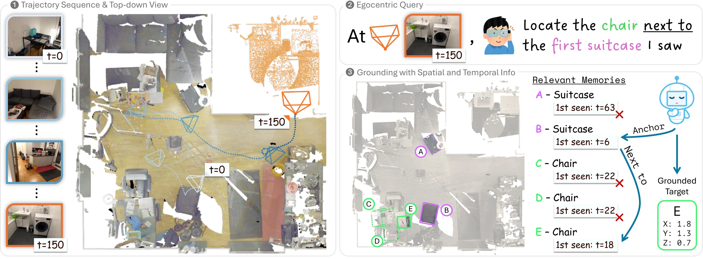
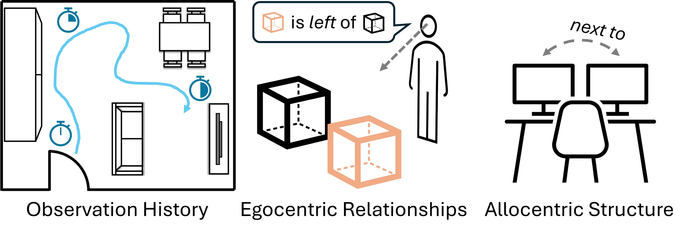
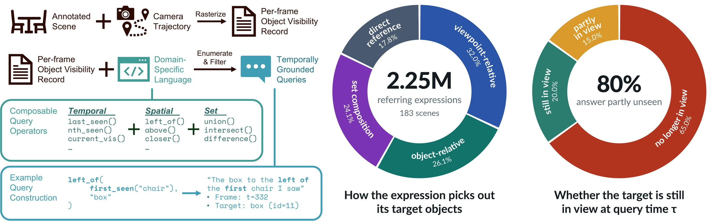
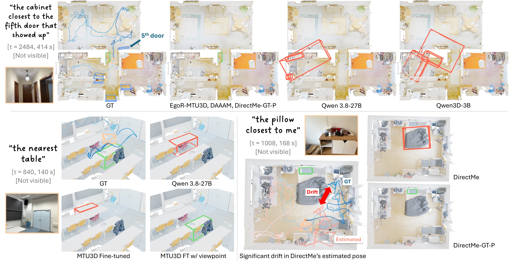
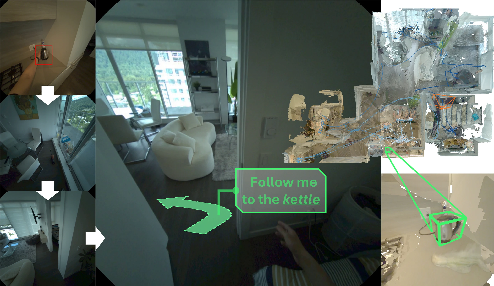

We introduce streaming egocentric 3D visual grounding, where an agent resolves referring expressions using only the partial observation history available at query time. Unlike conventional 3DVG, which assumes a complete scene representation, queries may depend on when and how objects were encountered as well as their spatial relationships.
We present EgoRecall, the first benchmark for this task, comprising 2.25M timestamped queries generated by a compositional DSL over observation history, egocentric relationships, and allocentric structure. Queries are defined with respect to the observations available at their timestamps and may refer to either currently visible or previously observed objects, requiring persistent scene memory.
We evaluate VLM-, 3D-, and memory-based methods under protocols that separate perception from grounding. The task is challenging with our strongest system achieving only 14.1 F1. Our experiments show that modeling observation history and camera-relative relationships improves performance, but targets no longer visible remain particularly challenging.
Consider a user wearing smart glasses in an unfamiliar office building. After walking through several rooms, they ask their assistant to guide them back to "the cabinet to the right of the first sink I encountered." Answering requires finding the first sink in the user's observation history, recovering the viewpoint from which it was seen, and locating the cabinet to its right, even though both objects may have long left the field of view.
EgoRecall queries combine three axes of reference. Observation history identifies objects by when and how they were encountered, such as the first or the most recently seen one. Egocentric relationships are spatial relations relative to the observer's viewpoint, such as to the left or closer to me. Allocentric structure captures relations that do not depend on the viewpoint, such as next to or above.

EgoRecall is built from ScanNet++ scenes, which provide instance-annotated 3D reconstructions, RGB-D captures, and camera trajectories. For each scene, we replay the capture at 6 FPS and rasterize the annotated mesh to record which objects are visible in every frame. A domain-specific language (DSL) with 22 operators composes programs over these visibility records. Running a program at a query time gives its ground-truth targets using only what has been observed so far, and each program is verbalized into a referring expression, such as "the box to the left of the first chair I saw."
EgoRecall contains 2.25M queries over 183 scenes, split into 100 training, 13 validation, and 70 test scenes, and covers 12.1 hours of video and 21,331 objects from 1,366 categories. Most queries are compositional, with 82% combining two or more operators. Most also require memory: for 65% of queries, no target is in view at query time, and for another 15%, only some targets are.

We evaluate five methods from four families, each given only the observations up to the query time: a VLM that points at objects in past frames (Qwen 3.8-27B), memory-free 3D grounding (Qwen3D), scene-graph memories (DAAAM and DirectMe), and a learned object-centric memory (MTU3D). We also fine-tune MTU3D on EgoRecall with added encoders for viewpoint, recency, and observation history, and call the result EgoR-MTU3D.
EgoRecall is far from solved. On 10,000 test queries, the best method, EgoR-MTU3D, reaches only 14.1 F1. Remembered targets are harder than visible ones: EgoR-MTU3D drops from 16.8 F1 when all targets are in view to 11.8 when all have left it. Perception also limits memory-based methods: DirectMe improves from 0.5 to 8.7 F1 when given ground-truth camera poses and depth.
All three targets below are out of view at query time. Green boxes mark the ground truth or correct predictions, and red boxes mark incorrect ones. Top: methods with persistent object memory find the cabinet after a 414-second observation history, while methods without it fail. Bottom left: the viewpoint encoder lets MTU3D find the remembered table instead of the tables in view. Bottom right: pose drift makes DirectMe pick the wrong pillow, which ground-truth poses fix.

Streaming grounding can help assistants on smart glasses. We run EgoR-MTU3D on a recording from Aria glasses: by query time, the wearer has walked through a multi-room apartment for 24 minutes, and the space has been mapped into over 2,000 object tracks. Asked for "the kettle I used to boil water" 76 seconds after the kettle left view, while the wearer is in another room, the model grounds the kettle in 3D, which can guide the wearer back to it.

@article{tam2026egorecall,
title = {{EgoRecall}: {3D} Visual Grounding from Streaming Egocentric Observations},
author = {Tam, Hou In Ivan and Savva, Manolis},
year = {2026},
eprint = {XXXX.XXXXX},
archivePrefix = {arXiv}
}This work was funded in part by a Canada Research Chair, NSERC Discovery Grants, and enabled by support from the Digital Research Alliance of Canada, and an NVIDIA Academic Grant Award. We thank Austin T. Wang, Denys Iliash, and Weikun Peng for helpful feedback and discussions.